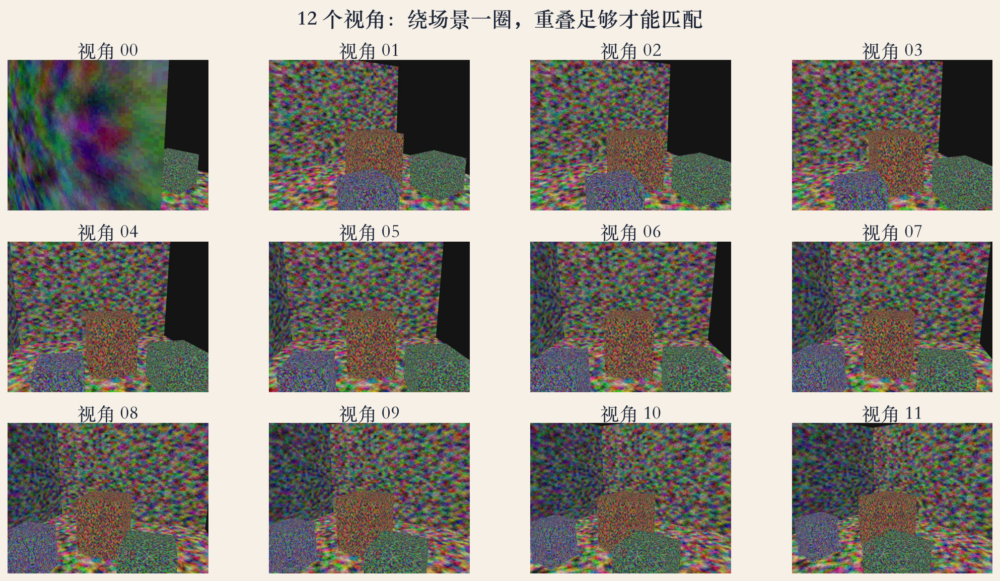
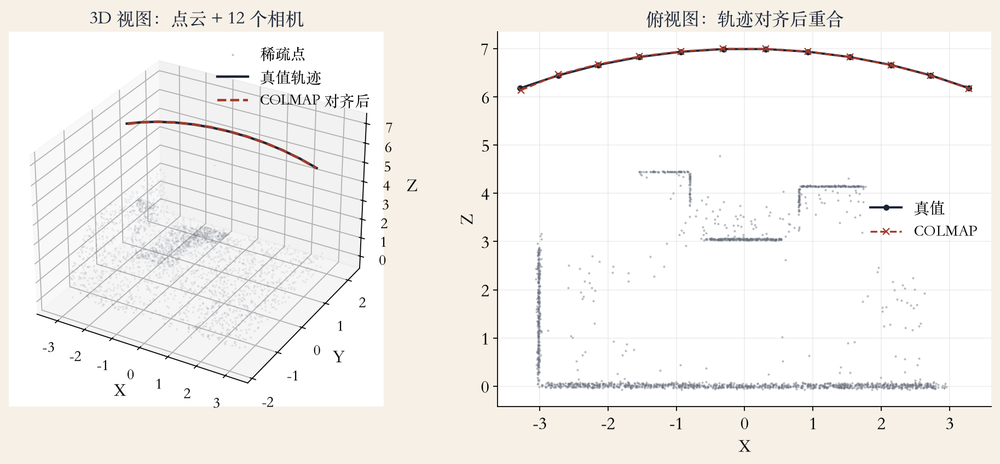
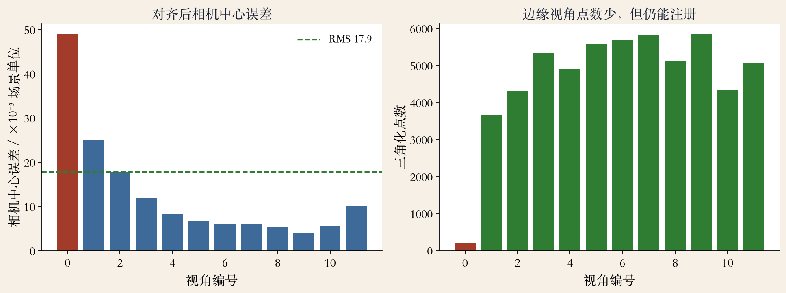

上机 · pycolmap 4.2.1
COLMAP：从照片到稀疏点云
- COLMAP 是开源的 SfM 加 MVS 系统。
- 教材只交代它是什么，不教具体命令。
- 本集用 pycolmap 4.2.1 跑完整稀疏重建。
- 输入是 12 张程序生成的纹理房间图。
依据：原书第 727 页；本集实验
本集范围
开源 SfM 加 MVS
只做稀疏重建
合成图，不是实拍
两个尺度
稀疏和稠密差在哪
- 稀疏模型：相机位姿加三维点。
- 稠密模型：逐像素深度或表面。
- 教材例子：2.1 万张照片重建罗马。
- 真实照片有重复结构、镜像、行人。
依据：原书第 728 页
两条路线
稀疏：只算特征点
稠密：每个像素都要算
本集只做稀疏
流水线
七步走完一次重建
- 输入图像，提取特征。
- 两两匹配，做几何验证。
- 选初始像对，增量注册相机。
- 三角化新点，最后做 BA。
依据：原书第 725 页；本集实验
可检查的中间产物
特征库与匹配对
初始模型
sparse/0 里的相机与三维点
输入 · 重叠与视差
绕一圈拍，相邻视角要重叠
- 12 个视角绕房间一圈。
- 相邻视角要有大量重叠。
- 初始像对还要有离面视差。
- 边缘视角 00 已经贴近左墙。
依据：原书第 726 页；本集实验

12 个视角绕房间：相邻视角重叠，边缘视角更斜｜程序生成，未用教材或论文原图
实验 · 特征提取
12 张图提取 103373 个 SIFT
- 12 张图共 103373 个特征。
- 平均每张 8614 个。
- 视角 00 只有 2153 个。
- 弱纹理、模糊、过曝提不出稳定特征。
依据：本集实验
匹配 · 全对比较
12 张图，两两一共 66 对
- 12 张图两两比较，共 66 对。
- 66 对都建立了有效匹配。
- 上万张图不能穷举，要先检索。
- 几何验证后看内点，不看匹配总数。
依据：原书第 725 页；本集实验
匹配两步
描述子匹配
基础矩阵或单应验证
内点不够就丢掉
初始像对
起点要稳，视差要够
- 初始像对要有足够多一致匹配。
- 还要有显著的离面视差。
- COLMAP 会自动试很多对。
- 基线太短深度不稳，太长匹配少。
依据：原书第 726 页
起点怎么选
一般让系统自动选
也可用 init_image_id1/2 指定
起点错，后面跟着错
增量注册
一张一张加相机
- 先建初始两视图。
- 新相机用 PnP 估位姿。
- 三角化新点，再做局部或全局 BA。
- 本次 12 张全部注册，12/12。
依据：原书第 726 页；本集实验
看注册也要看点
视角 00 只有 211 个点
12/12 不代表每张贡献相同
注册失败先查匹配
实验 · 稀疏模型
10324 个点勾出房间
- 10324 个三维点，55938 条观测。
- 平均轨迹长度 5.42。
- 平均重投影误差 0.2712 像素。
- 点云勾出墙面、地面和三个盒子。
依据：本集实验

稀疏点云与 12 个相机：10324 点、重投影 0.2712 px｜程序生成，未用教材或论文原图
实验 · 相似对齐
先对齐尺度，再比误差
- 相似对齐后相机中心 RMS 0.0179。
- 最大误差 0.049，出现在视角 00。
- 视角 00 的三角化点也最少，211 个。
- 单目重建没有绝对尺度，先对齐再比。
依据：本集实验

相机中心误差（相似对齐后）与每视角三角化点数｜程序生成，未用教材或论文原图
内参
焦距先验 700，主点固定
- 先验焦距 700，主点 400/300。
- 优化后得到 700.15 和 702.74。
- 最大焦距误差 0.39%。
- EXIF 可以给初值，BA 再调整。
依据：原书第 726 页；本集实验
内参怎么定
手机照片先读 EXIF
主点这次固定
焦距漂会让点云前后缩
输出边界
稀疏不是稠密
- 本集只做到稀疏模型。
- 10324 个点够定位和看结构。
- 不够做精细表面。
- 稀疏点云看起来空是正常的。
依据：原书第 728 页；本集实验
稀疏与稠密
稀疏：只留稳定特征点
稠密：逐像素深度
稠密依赖稀疏位姿
失败边界
真实场景难在哪
- 重复或镜像结构会匹配错。
- 行人等动态物体会破坏重建。
- 弱纹理、纯旋转、重叠不足也会失败。
- COLMAP 可能给出多个模型，或只注册一部分。
依据：原书第 728 页；本集实验
复现 · pycolmap
特征、匹配、建图三段
- 先准备图像目录。
- extract_features 提 SIFT 并写数据库。
- match_exhaustive 做全对匹配。
- incremental_mapping 做增量重建。
依据：本集实验（pycolmap 4.2.1）
关键参数
相机模型 PINHOLE
参数 700,700,400,300
单相机 SINGLE
验收清单
五看：注册、重投影、轨迹、内参、形状
- 一看注册率：12 张是否都注册。
- 二看重投影误差：平均是否小于一像素。
- 三看轨迹长度：点是否被多张图看到。
- 四看焦距主点，五看轨迹与点云是否分叉。
依据：本集实验（工程经验）
最后一步
把点云投回图像
看是否贴在纹理上
对不上，数字再好看也不能用
收束 · 下一集
工具跑通，再讲原理
- 流水线：特征、匹配、注册、三角化、BA。
- 单目重建没有绝对尺度，先相似对齐。
- 注册率和重投影误差要一起看。
- 下一集讲立体视觉：视差怎么变深度。
依据：原书第 725–728 页；移交 E111
三条线
本集：把工具跑通
下一集：把原理讲透
第 12 章：立体视觉